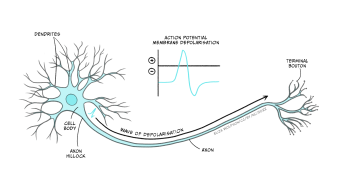
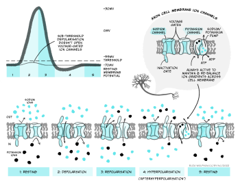
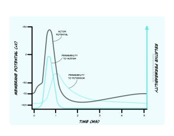
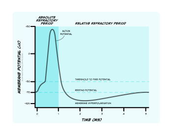
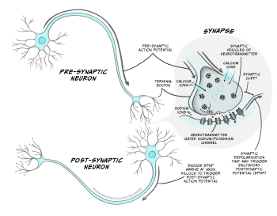
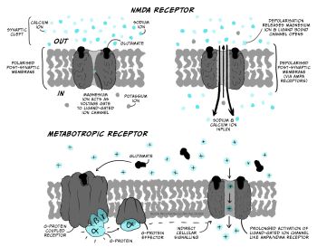
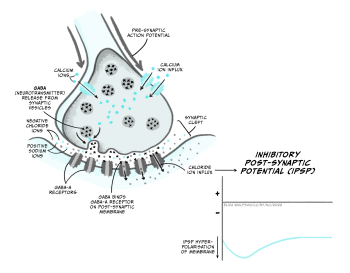

Transmisión neuronal
Objetivos de aprendizaje
Al finalizar este capítulo, vas a comprender:
- que las neuronas señalizan eléctricamente dentro de cada célula y químicamente entre células
- la base iónica del potencial de acción y cómo se conduce
- los procesos que intervienen en la transmisión sináptica
- cómo las neuronas integran la información en las sinapsis.
En el capítulo anterior aprendimos sobre la señalización eléctrica en el cerebro y sobre cómo los gradientes electroquímicos y los canales iónicos permiten que las neuronas establezcan su potencial de membrana. En este capítulo vamos a aprender cómo estos procesos generan las señales dentro de las neuronas y entre ellas que constituyen la base del procesamiento de la información en el cerebro.
Las señales se transmiten eléctricamente dentro de las neuronas y químicamente entre las neuronas, en las sinapsis. Las señales eléctricas dentro de las neuronas adoptan la forma de potenciales de acción y de potenciales sinápticos. Vamos a hablar de las señales eléctricas en las células como productoras de un cambio positivo del potencial de membrana —denominado despolarización— o de un cambio negativo del potencial de membrana, denominado hiperpolarización.
Potenciales de acción

Un potencial de acción es una señal eléctrica breve que se conduce desde el cono axónico, donde el soma de la neurona se une al axón, a lo largo del axón hasta las terminales axónicas. Se puede medir con electrodos colocados dentro de una neurona o cerca de ella, conectados a un voltímetro (Fig. 3.21). Esta señal eléctrica es un cambio rápido y localizado del voltaje de membrana, que pasa de manera transitoria del potencial de membrana en reposo, negativo, a un potencial de membrana positivo. Un desplazamiento positivo del potencial de membrana como este se denomina despolarización. Luego, la membrana vuelve a hacerse negativa con rapidez (dentro de 1 ms) —se repolariza— y después se desplaza todavía más hacia valores negativos, se hiperpolariza, antes de regresar al potencial de membrana en reposo menos de 5 ms después de haberse despolarizado por primera vez (Fig. 3.22). Este cambio transitorio de voltaje se propaga entonces como una onda a lo largo del axón, con una velocidad de conducción de entre 1 y 100 m/s.

El potencial de acción se produce por la apertura y el cierre de canales iónicos dependientes de voltaje
¿Qué ocurre dentro del axón para causar estos cambios del voltaje de membrana?
Como se señaló más arriba, la manera en que las neuronas suelen modificar sus potenciales de membrana es cambiando la permeabilidad de la membrana a distintos iones mediante la apertura y el cierre de canales iónicos, y eso es exactamente lo que ocurre durante el potencial de acción. Los canales iónicos que se abren y se cierran para formar el potencial de acción son canales iónicos dependientes de voltaje. Como su nombre lo indica, estos canales se abren o se cierran según el voltaje a través de la membrana. Hay muchos tipos distintos de canales iónicos dependientes de voltaje, que difieren en sus umbrales de activación —los voltajes a los que se abren y se cierran—, así como en su selectividad para los iones. Cuando se abren, los iones fluyen a favor de sus gradientes electroquímicos hacia sus potenciales de equilibrio.
Los canales de sodio y de potasio dependientes de voltaje se abren para despolarizar y luego hiperpolarizar la membrana

La fase ascendente (cuando el voltaje se despolariza con rapidez) del potencial de acción (Fig. 3.23) se produce por la apertura de canales de sodio dependientes de voltaje que tienen un umbral de apertura de -55 mV. Cuando la membrana de la neurona se despolariza hasta -55 mV, estos canales de sodio dependientes de voltaje empiezan a abrirse. Los iones de sodio entran en gran cantidad a la célula, despolarizan la membrana y abren todavía más canales de sodio, lo que causa una despolarización muy rápida de la membrana. Esta activación por anteroalimentación de los canales de sodio hace que el potencial de acción sea un evento de todo o nada (o bien ocurre, o bien no ocurre). Si se alcanza el umbral, se abren los canales de sodio, se produce una despolarización acelerada y ocurre un potencial de acción (o «descarga»). Si no se alcanza el umbral, los canales de sodio no se abren y no va a descargar ningún potencial de acción. Además, el potencial de acción tiene siempre el mismo tamaño y no se gradúa según el tamaño de la despolarización entrante.
Si los canales de sodio permanecieran abiertos, el potencial de membrana se estabilizaría en el potencial de equilibrio del sodio (ENa), a +62 mV, pero, en cambio, el voltaje solo alcanza alrededor de +40 mV antes de hiperpolarizarse de nuevo, de modo que la membrana permanece despolarizada durante menos de 1 ms. La despolarización es tan breve por dos razones: en primer lugar, los canales de sodio dependientes de voltaje se inactivan con rapidez, cierran el canal e impiden que siga entrando Na+ a la célula. En segundo lugar, se activa un segundo tipo de canal dependiente de voltaje: el canal de potasio dependiente de voltaje. Algunos de estos canales de potasio dependientes de voltaje se activan con el mismo umbral que los canales de sodio, pero más lentamente, y otros se activan a un voltaje más positivo (alrededor de +30 mV). Estos dos factores hacen que la apertura de los canales de potasio dependientes de voltaje se retrase respecto del ingreso de Na+. Sin embargo, cuando los canales se abren, el K+ sale de la célula, hace que la membrana se vuelva más negativa, o se hiperpolarice, y produce la fase descendente o el trazo descendente del potencial de acción (Fig. 3.23).
El aumento de la permeabilidad al K+ provoca una poshiperpolarización
Muchos canales de potasio dependientes de voltaje se desactivan con bastante lentitud después de que el potencial de membrana cae por debajo de su voltaje umbral. Esto significa que, después de que el potencial de membrana se ha repolarizado y ha alcanzado el potencial de membrana en reposo, todavía hay algunos canales de potasio dependientes de voltaje abiertos, además de los canales de fuga de potasio, que están siempre abiertos. Como la membrana es ahora más permeable al K+ que en reposo, el potencial de membrana se hiperpolariza por debajo del potencial de membrana en reposo y se acerca todavía más al potencial de equilibrio del K+, EK. Esta fase hiperpolarizada se denomina poshiperpolarización. Luego, a medida que los canales de potasio dependientes de voltaje se cierran, la permeabilidad de la membrana al potasio vuelve a la normalidad y el potencial de membrana se despolariza levemente hasta regresar al potencial de membrana en reposo.

La inactivación de los canales de sodio causa el período refractario de la descarga del potencial de acción
La apertura y el cierre de los canales de sodio y de potasio dependientes de voltaje a distintos voltajes umbral, y la inactivación de los canales de sodio, ocurren porque las compuertas de las proteínas se mueven para abrir y cerrar la región del poro en el centro del canal, que permite que los iones fluyan a través de la membrana (Fig. 3.24). En el potencial de membrana en reposo, tanto los canales de sodio como los de potasio dependientes de voltaje tienen una conformación o forma en la que parte de la proteína bloquea el poro del canal iónico (es decir, es como si hubiera una compuerta cerrada que bloquea el poro). Cuando se alcanza el voltaje umbral, la forma de las proteínas del canal iónico cambia levemente, de modo que esta compuerta se abre y deja pasar los iones. Esta compuerta se abre con rapidez en los canales de sodio dependientes de voltaje, pero más lentamente, o a potenciales más despolarizados, en los canales de potasio dependientes de voltaje, de modo que, durante la fase ascendente del potencial de acción, solo están abiertas las compuertas de los canales de sodio. Sin embargo, después de un tiempo muy breve, una compuerta de inactivación del lado intracelular del canal de sodio dependiente de voltaje bascula hasta cerrarse, bloquea el poro desde el interior e impide que continúe el flujo de Na+. A medida que se abren los canales de potasio dependientes de voltaje, durante la fase descendente del potencial de acción, los canales de sodio dependientes de voltaje están inactivados. Incluso cuando la membrana cae por debajo del voltaje umbral y se cierra la compuerta sensible al voltaje, las compuertas de inactivación de los canales de sodio siguen cerradas. Esto significa que los canales de sodio no pueden volver a abrirse, y la neurona no puede descargar otro potencial de acción hasta que las compuertas de inactivación se abran de nuevo.
Este intervalo, en el que es imposible la descarga de otro potencial de acción, se denomina período refractario absoluto (Fig. 3.25). Las compuertas de inactivación de los canales de sodio empiezan a abrirse de nuevo durante la fase descendente del potencial de acción, cuando los canales de potasio dependientes de voltaje todavía están abiertos. En esta etapa ya es posible descargar otro potencial de acción, pero hace falta un estímulo más intenso para activar los canales de sodio. Este período es el período refractario relativo (Fig. 3.25). Por lo tanto, los estímulos más intensos (que despolarizan más una neurona) pueden producir una tasa de descarga más alta en una neurona diana que los estímulos más débiles, al invadir el período refractario relativo.

Propagación del potencial de acción
Los potenciales de acción se inician en el segmento inicial del axón, cerca del soma, justo al lado del cono axónico. Si el potencial de membrana en ese sitio se despolariza lo suficiente como para hacer que se abran los canales de sodio dependientes de voltaje, entonces se va a descargar un potencial de acción en ese tramo de membrana. En un axón no mielinizado (Fig. 3.26), parte de la carga positiva (iones Na+) que entra a la célula durante la fase ascendente del potencial de acción se propaga al tramo adyacente de membrana, despolariza esa membrana y abre allí los canales de sodio dependientes de voltaje, con lo que se produce un potencial de acción que se propaga al tramo de membrana siguiente, de modo que una onda de despolarización y repolarización se propaga a lo largo del axón hasta las terminales axónicas. La inactivación de los canales de sodio impide la propagación retrógrada del potencial de acción de vuelta hacia el soma: como la membrana situada hacia el soma está en el período refractario absoluto, el potencial de acción solo puede propagarse en sentido anterógrado, hacia la membrana en la que los canales de sodio no están inactivados.

Aumentar el diámetro del axón y mielinizar el axón aumentan la velocidad de conducción
Los potenciales de acción se propagan con bastante lentitud a lo largo de los axones pequeños no mielinizados – alrededor de 0,5-2 m/s –, porque cada tramo de membrana tiene que descargar un potencial de acción y propagarlo al tramo de membrana siguiente. Esta velocidad de conducción sería demasiado lenta para obtener información actualizada sobre lo que ocurre en el extremo más alejado de nuestro cuerpo – ¡imaginá que movés el dedo del pie y que recién 4 segundos después sabés que efectivamente lo habías movido! Por suerte, la conducción del potencial de acción puede aumentarse de dos maneras principales.
En primer lugar, la velocidad de conducción aumenta al aumentar el diámetro del axón, lo que reduce la resistencia al flujo de corriente dentro del axón y permite que la despolarización se propague de manera pasiva más lejos a lo largo del axón y, por lo tanto, active con mayor rapidez la descarga de potenciales de acción en la membrana situada más adelante.
En segundo lugar, la mielinización de los axones aumenta la velocidad de conducción. Las capas de mielina que los oligodendrocitos (en el SNC) o las células de Schwann (en el SNP) enrollan de manera apretada alrededor de los axones aíslan la membrana del axón de la pérdida de corriente a través de la membrana. La membrana del axón envuelta en capas de mielina no contiene canales iónicos – tiene baja permeabilidad y alta resistencia al flujo de corriente. Esto permite que la corriente se propague más lejos dentro del axón sin filtrarse fuera de la célula, lo que permite que la corriente se propague más lejos a lo largo del axón sin disiparse. La vaina de mielina también disminuye la capacitancia de la membrana – la cantidad de carga almacenada en la membrana. La carga se almacena en la membrana cuando las cargas positivas y negativas se atraen entre sí a través de la delgada membrana plasmática, y así quedan retenidas cerca unas de otras a ambos lados de la membrana. Al enrollarse de manera apretada alrededor de la membrana, la mielina aumenta la distancia entre los líquidos intracelular y extracelular que contienen partículas cargadas, de modo que estas se atraen menos entre sí a través de la membrana envuelta. La capacitancia reducida permite que la corriente se propague más lejos (y más rápido) dentro del axón, ya que los iones no quedan retenidos en la membrana.
El resultado de la mielinización es que la despolarización puede propagarse con rapidez y de manera pasiva a lo largo de distancias relativamente largas del axón, pero no puede propagarse a lo largo de toda su longitud. La señal todavía necesita regenerarse de manera periódica mediante la generación de un nuevo potencial de acción. Esto ocurre en los nodos de Ranvier, que son brechas de la vaina de mielina repletas de canales iónicos. Cuando los nodos de Ranvier se despolarizan, sus canales de sodio dependientes de voltaje se abren y desencadenan un nuevo potencial de acción, que entonces puede propagarse de manera pasiva a través de la región internodal envuelta del axón hasta el nodo de Ranvier siguiente (Fig. 3.26). Como el potencial de acción salta con rapidez de un nodo a otro, esta forma de conducción se denomina conducción saltatoria (del latín ‘saltare’ – ‘saltar’). Los axones mielínicos de gran diámetro pueden conducir potenciales de acción a velocidades de hasta 100 m/s, de modo que la información sobre el movimiento del dedo del pie puede llegar a tu cerebro en unos respetables 0,02 s. De hecho, las neuronas sensoriales que llevan información sobre dónde se encuentra nuestro cuerpo en el espacio poseen algunos de los axones de propagación más rápida entre todas las células.
Las afecciones desmielinizantes, como la esclerosis múltiple y el síndrome de Guillain-Barré, causan una multitud de síntomas, entre ellos alteraciones de la sensibilidad, debilidad muscular y deterioros cognitivos, debido a la pérdida de las vainas de mielina, la alteración de la comunicación neuronal y la eventual degeneración axonal.
Uso de energía por los potenciales de acción
El flujo de iones a través de los canales iónicos dependientes de voltaje durante el potencial de acción ocurre a favor de sus gradientes electroquímicos, de modo que no consume energía por sí mismo. Durante un potencial de acción, en realidad fluyen muy pocos iones, de modo que los gradientes de concentración no cambian de manera significativa a corto plazo. A más largo plazo, sin embargo, estos iones deben bombearse de regreso para mantener los gradientes de concentración y el potencial de membrana en reposo, de manera que puedan descargar nuevos potenciales de acción. Esto lo lleva a cabo la ATPasa de Na+/K+, que utiliza ATP. La mielinización de los axones ayuda a acelerar la conducción del potencial de acción, pero también hace que la descarga del potencial de acción sea energéticamente más eficiente, porque es necesario que fluyan menos iones para despolarizar la membrana mielinizada. Por lo tanto, es necesario bombear de regreso menos iones a través de la membrana, de modo que la ATPasa de Na+/K+ necesita menos ATP.
Potencial de acción: Ideas clave
- Cuando la membrana alcanza un voltaje umbral, los canales de sodio dependientes de voltaje se abren brevemente y despolarizan la célula
- Los canales de potasio dependientes de voltaje se abren y repolarizan la célula
- La despolarización se propaga a lo largo de la membrana y activa los canales de sodio cercanos
- La inactivación de los canales de sodio hace que el potencial de acción se propague en una sola dirección y establece un límite a la tasa de descarga
- Los potenciales de acción son todo o nada, y solo ocurren una vez que se alcanza el umbral de activación de los canales de sodio
- La mielinización acelera los potenciales de acción y los vuelve energéticamente más eficientes.
Comunicación entre neuronas
Las neuronas señalizan eléctricamente y usan potenciales de acción para comunicarse entre el soma y las terminales axónicas. El potencial de acción señala que el soma y el segmento inicial del axón se despolarizaron hasta el voltaje umbral. Pero ¿qué genera esa despolarización en primer lugar? ¿Cuál es la señal que despolariza una neurona para hacer que descargue un potencial de acción? En el capítulo 3 vimos que las neuronas integran muchas entradas y computan si descargan o no un potencial de acción. En las neuronas sensoriales, estas entradas a una neurona pueden ser información del mundo exterior (o interno), por ejemplo el estiramiento de la piel, un calor doloroso o un olor delicioso. En capítulos posteriores vas a aprender más sobre cómo estos tipos de estímulos generan entradas en las neuronas. Pero, para la mayoría de las neuronas, las entradas provienen de otras neuronas, mediante conexiones, o sinapsis. Si bien las neuronas se comunican eléctricamente dentro de una célula, la comunicación entre neuronas suele ser química – una sustancia química o un neurotransmisor se libera desde una neurona y actúa para generar una señal en la neurona siguiente.
Transmisión sináptica
Durante la transmisión sináptica, un potencial de acción en una neurona – la neurona presináptica – hace que se libere un neurotransmisor en un minúsculo espacio denominado hendidura sináptica entre dos neuronas. El neurotransmisor se difunde a través de la hendidura sináptica y se une a receptores de la neurona que recibe la señal – la neurona postsináptica –, lo que produce un cambio en la célula postsináptica. Al examinar este proceso con más detalle, vamos a dividir los procesos de la transmisión sináptica en una serie de pasos separados (Fig. 3.27):

- Un potencial de acción llega a la terminal axónica (o terminal presináptica) y la despolariza.
- La despolarización de la terminal presináptica abre un nuevo tipo de canal iónico dependiente de voltaje – el canal de calcio dependiente de voltaje, que tiene un umbral de activación de alrededor de -10 mV. Cuando estos canales se abren, el calcio (Ca2+) entra a la célula a favor de su gradiente electroquímico, ya que hay una concentración más alta de Ca2+ en el líquido extracelular que en el líquido intracelular (1,5-2 mM fuera de la célula, frente a 0,05 – 0,1 mM dentro de la célula), y su carga positiva lo atrae hacia el interior de la célula cargada negativamente. A diferencia del Na+ y del K+, el Ca2+ no está presente en concentraciones lo bastante altas como para afectar el potencial de membrana de la célula. En cambio, un aumento de la concentración intracelular de Ca2+ puede desencadenar distintas cascadas de señalización en la célula, al unirse a distintas proteínas.
- El Ca2+ que entra a través de los canales de calcio dependientes de voltaje se une a una proteína denominada sinaptotagmina.
- La terminal presináptica contiene muchas pequeñas «bolsas» de membrana denominadas vesículas sinápticas, que están repletas de neurotransmisor. Algunas de estas vesículas están cerca de una zona de la membrana plasmática de la célula denominada ‘zona activa‘, mientras que las vesículas que todavía se están llenando de neurotransmisor se encuentran más lejos de la membrana y más cerca del centro de la terminal presináptica. Las vesículas de la zona activa están «acopladas», sostenidas cerca de la membrana plasmática por un complejo de proteínas denominadas proteínas SNARE. Cuando el calcio se une a la sinaptotagmina, las membranas de la vesícula y la membrana plasmática de la célula se acercan aún más y se fusionan, con lo que liberan el contenido de la vesícula (moléculas de neurotransmisor) en el espacio extracelular de la hendidura sináptica. Las vesículas que ya están acopladas en la zona activa se liberan con mayor facilidad, de modo que son las primeras en fusionarse con la membrana y liberar su neurotransmisor.
- La hendidura sináptica es muy estrecha, de modo que las moléculas de neurotransmisor pueden difundirse con rapidez desde la terminal presináptica hasta la célula postsináptica.
- La membrana de la célula postsináptica (por lo general, parte de una dendrita) contiene receptores para las moléculas de neurotransmisor que se liberan desde la célula presináptica. Un receptor es una proteína que puede unirse a una molécula específica – denominada ligando. Muchos de estos receptores forman parte de canales iónicos activados por ligando. Son canales iónicos que se abren cuando una molécula específica se une a ellos. Los iones fluyen a través de los canales iónicos abiertos, a favor de sus gradientes electroquímicos, y producen un cambio en el voltaje de membrana de la célula postsináptica.
- Para finalizar la señalización sináptica, el neurotransmisor debe retirarse de la hendidura sináptica. Esto lo llevan a cabo transportadores situados en las neuronas o en los astrocitos, proteínas que captan el neurotransmisor hacia el interior de la célula, donde puede degradarse, reciclarse o volver a empaquetarse. Algunos neurotransmisores también pueden ser degradados por proteínas presentes en la hendidura sináptica.
Sinapsis excitatorias
Las sinapsis excitatorias hacen más probable que la neurona postsináptica descargue un potencial de acción, al producir una despolarización en la célula postsináptica que la acerca al potencial umbral para la apertura de los canales de sodio dependientes de voltaje. Esto ocurre cuando se permite que los iones Na+ fluyan hacia el interior de la célula.
El principal neurotransmisor excitatorio del cerebro es el glutamato (la acetilcolina es un neurotransmisor excitatorio importante en el sistema nervioso periférico). Los principales receptores del glutamato son los receptores AMPA y NMDA. Los receptores AMPA son canales iónicos activados por ligando que dejan pasar tanto el Na+ como el K+. Aunque los iones K+ salen de la célula cuando se abren los receptores AMPA, el efecto principal es un ingreso de Na+, de modo que, cuando el glutamato se une a los receptores AMPA, la membrana se despolariza hacia el umbral para la descarga de un potencial de acción. Este cambio despolarizante del potencial de membrana se denomina potencial postsináptico excitatorio (PPSE; Fig. 3.28) y dura varios (> 10) milisegundos.

Los receptores NMDA también son canales iónicos activados por ligando y son permeables al Ca2+, así como al Na+ y al K+. Sin embargo, también dependen del voltaje, ya que están bloqueados por iones Mg2+ a menos que el potencial de membrana esté despolarizado. También son más lentos que los receptores AMPA para abrirse y cerrarse. Por este motivo no contribuyen mucho al PPSE. Sin embargo, cumplen un papel realmente importante en la modificación de la fuerza sináptica – es decir, cuánto efecto puede tener un potencial de acción presináptico sobre la célula postsináptica.
Los receptores metabotrópicos de glutamato también suelen estar presentes. Los receptores metabotrópicos también se conocen como receptores acoplados a proteína G. Estas proteínas unen glutamato, pero no abren de manera directa un canal iónico. En cambio, desencadenan otras vías de señalización intracelular que pueden producir otros cambios en la célula, por ejemplo alterar las propiedades de otros canales iónicos. Como su acción ocurre mediante vías de señalización intracelular, tienen efectos más lentos que los receptores ionotrópicos (receptores como los AMPA y los NMDA, que forman parte de canales iónicos y los activan de manera directa).

Por lo general, un PPSE de una sola sinapsis no despolariza la neurona postsináptica lo suficiente como para alcanzar el umbral para la descarga de un potencial de acción. En cambio, es necesario sumar múltiples entradas sinápticas para obtener un PPSE lo bastante grande (Fig. 3.30). Si la neurona presináptica descarga muchos potenciales de acción en un lapso breve, las entradas en una sola sinapsis pueden sumarse y formar un PPSE más grande. Esta es la sumación temporal. Además, si distintas sinapsis excitatorias están activas al mismo tiempo, estos PPSE pueden sumarse espacialmente y generar un PPSE más grande. Tanto la sumación temporal como la espacial ocurren para integrar las entradas que llegan a una célula postsináptica y determinar si esta descarga un potencial de acción.

Sinapsis inhibitorias
Las sinapsis inhibitorias hacen menos probable que la neurona postsináptica descargue un potencial de acción, al hiperpolarizar la membrana, o al impedir que se despolarice al mantener la membrana por debajo del valor necesario para activar los canales de sodio.
El principal neurotransmisor inhibitorio del cerebro es el GABA (ácido gamma-aminobutírico), cuyos principales receptores son los receptores GABAA y los receptores GABAB . Los receptores GABAA son canales iónicos activados por ligando, permeables a los iones Cl– cuando el GABA está unido. Como, con la activación, los iones Cl– entran a la célula y el potencial de equilibrio del Cl– (ECl) es de -65 mV, la apertura de los canales GABAA tiende a mantener el potencial de membrana cerca de -65 mV. Como este valor está por debajo del umbral de activación de los canales de sodio, esto inhibe la descarga de un potencial de acción en la neurona postsináptica. Según el voltaje de membrana de la célula cuando estos canales se abren, el potencial de membrana puede hiperpolarizar o despolarizar levemente la célula. En cada caso, sin embargo, este cambio del potencial de membrana es inhibitorio (un PPSI (potencial postsináptico inhibitorio)) porque mantiene el potencial de membrana alejado del valor necesario para descargar un potencial de acción. Por ejemplo, si el potencial de membrana de la neurona es de -75 mV cuando se abren los receptores GABAA, el potencial de membrana se desplaza hacia ECl y, por lo tanto, se despolariza levemente hasta -65 mV. Sin embargo, los receptores GABAA abiertos impiden que la membrana se despolarice más allá de -65 mV hasta el umbral para descargar un potencial de acción. Si el potencial de membrana es más positivo que ECl, p. ej., -60 mV, entonces la apertura de los canales GABAA hace que el potencial de membrana sea más negativo, o quede hiperpolarizado, hasta alcanzar -65 mV. En ambos casos, la apertura de los canales GABAA hace menos probable que la neurona alcance el umbral para la descarga de un potencial de acción.
Los receptores GABAB son receptores metabotrópicos ligados a la activación de canales de potasio, lo que aumenta la permeabilidad al K+. Su activación desplaza, por lo tanto, el potencial de membrana hacia EK, o -80 mV, e hiperpolariza la célula. Los cambios del potencial de membrana mediados por GABAB también son, por lo tanto, PPSI, ya que hiperpolarizan la membrana y la alejan del umbral para la descarga del potencial de acción, pero, como requieren señalización intracelular, estos PPSI son más lentos que los cambios del potencial de membrana mediados por GABAA.

Integración sináptica
Las células postsinápticas usan la sumación temporal y espacial para integrar todas las distintas entradas sinápticas de la célula. Si el efecto neto de todas las entradas es despolarizar el segmento inicial del axón por encima del umbral de activación de los canales de sodio, la célula descarga un potencial de acción. El modo en que todas estas entradas se integran para generar una salida (un potencial de acción) es, por lo tanto, la base de cómo las neuronas realizan los cómputos de los que dependen nuestros pensamientos y sentimientos.
Las neuronas pueden realizar distintos cómputos según su morfología y la organización espacial de sus entradas excitatorias e inhibitorias, ya que esto modifica el modo en que se suman (Fig. 3.32). La mayoría de las entradas sinápticas llegan a las dendritas de una neurona, pero algunas pueden llegar al soma o incluso al axón. Las entradas sinápticas en el extremo distal de las dendritas (lejos del soma) pueden tener un efecto potencialmente menor sobre el potencial de membrana en el segmento inicial del axón que una entrada sobre el soma, porque la señal se degrada a lo largo de la distancia que debe recorrer, mientras que las entradas sobre el propio segmento inicial del axón pueden tener un efecto aún más intenso que las que llegan al soma. Las entradas excitatorias sobre las dendritas distales también pueden quedar bajo la compuerta de sinapsis inhibitorias más proximales al soma, en la misma dendrita, de modo que el PPSE no puede alcanzar el soma. La capacidad de los PPSE y los PPSI de propagarse a lo largo de las dendritas también está determinada por factores como el número y el tipo de canales iónicos de las membranas dendríticas, así como por el tamaño de la célula. Si hay pocos canales iónicos, la carga no puede filtrarse con tanta facilidad a través de la membrana y disipar el cambio de potencial. De manera similar, una entrada dada se propaga más lejos en una célula pequeña que en una célula más grande y muy ramificada, ya que se pierde menos carga en la membrana (la célula más pequeña tiene una capacitancia menor). Sin embargo, las dendritas también expresan canales iónicos dependientes de voltaje que pueden reforzar las señales de las dendritas distales.

El cómputo de las neuronas puede, por lo tanto, verse afectado por muchos factores, desde la localización y la fuerza de las sinapsis individuales hasta la forma de la célula y el número y la localización de los canales iónicos expresados. Muchas de estas propiedades pueden modificarse según la actividad de la célula, lo que permite alterar la contribución de las distintas conexiones sinápticas a la decisión de descargar un potencial de acción. Esta plasticidad en la conectividad sináptica es fundamental para permitir que se formen y se rompan asociaciones entre neuronas, y forma la base del aprendizaje y de la memoria, además de moldear el modo en que percibimos el mundo.
Uniones comunicantes (gap junctions)
Si bien la mayoría de las conexiones entre neuronas se establecen mediante sinapsis químicas, también existen conexiones eléctricas directas. Se denominan uniones comunicantes y están formadas por pares de hemicanales, uno en cada célula, constituidos por un complejo de proteínas denominadas conexinas. En comparación con otros canales iónicos, las uniones comunicantes son relativamente no selectivas y dejan pasar cationes (iones con carga positiva) y aniones (iones con carga negativa), así como moléculas pequeñas como el ATP. Aunque la regulación de su apertura es posible, por lo general están abiertas, lo que significa que las señales eléctricas pueden propagarse a través de las células conectadas. Las uniones comunicantes son más frecuentes durante el desarrollo y son raras entre las células excitatorias de los sistemas nerviosos maduros. Se encuentran sobre todo entre ciertas interneuronas inhibitorias del cerebro y de la retina, así como entre la glía, como los astrocitos.
, adapted by Catherine Hall. Available from: https://commons.wikimedia.org/wiki/File:Gap_cell_junction-en.svg. Licence: Public domain.")
Otros neurotransmisores
Si bien el glutamato es el principal neurotransmisor excitatorio del cerebro, y el GABA es el principal neurotransmisor inhibitorio del cerebro, hay muchos otros neurotransmisores que también pueden liberarse en las sinapsis. Estos pueden dividirse, a grandes rasgos, en distintas categorías, según la estructura química de las moléculas de neurotransmisor. Todos activan sus propios receptores específicos.
Los neurotransmisores aminoacídicos incluyen el glutamato, el GABA y también la glicina, que es el principal neurotransmisor inhibitorio del tronco encefálico y de la médula espinal.
Los neurotransmisores monoamínicos incluyen la noradrenalina, la dopamina y la serotonina. Hay poblaciones específicas de neuronas monoaminérgicas en el cerebro que se originan en núcleos específicos del mesencéfalo y del tronco encefálico y envían proyecciones a regiones amplias del cerebro, y modulan procesos como la recompensa, la atención y el estado de alerta. La noradrenalina también es un transmisor excitatorio en el sistema nervioso periférico.
Los neurotransmisores peptídicos incluyen péptidos opioides de origen natural – endorfinas, encefalinas y dinorfinas – que activan los mismos receptores que los fármacos opiáceos, como la morfina y la heroína. Hay numerosos otros neurotransmisores peptídicos, entre ellos la oxitocina y la somatostatina. Los neurotransmisores peptídicos a menudo se liberan en las sinapsis junto con el GABA o la serotonina.
Los neurotransmisores purínicos incluyen el ATP, la principal moneda energética de la célula, y su producto de degradación, la adenosina.
La acetilcolina se diferencia estructuralmente de los demás neurotransmisores. Es un neurotransmisor excitatorio común en el sistema nervioso periférico, incluida la unión neuromuscular, y también la liberan muchas neuronas del cerebro, donde interviene en la regulación del estado de alerta, la memoria y la atención.
Transmisión sináptica: Ideas clave
- Cuando un potencial de acción llega a una terminal axónica, se abren canales de calcio dependientes de voltaje, lo que permite el ingreso de Ca2+ a la terminal
- El Ca2+ se une a la sinaptotagmina y acerca las vesículas sinápticas hasta muy cerca de la membrana plasmática. Esto desencadena la fusión de las vesículas sinápticas con la membrana plasmática, con lo que se libera el neurotransmisor en la hendidura sináptica.
- El neurotransmisor difunde a través de la hendidura sináptica y se une a receptores ionotrópicos o metabotrópicos de la célula postsináptica.
- Los receptores de neurotransmisores excitatorios, como el glutamato, desencadenan el ingreso de Na+ a la célula postsináptica, despolarizan la membrana (se produce un PPSE) y hacen más probable que la célula postsináptica se despolarice hasta el umbral para descargar un potencial de acción.
- Los neurotransmisores inhibitorios, como el GABA, activan receptores que mantienen el potencial de membrana negativo con respecto al umbral para descargar un potencial de acción (se genera un PPSI).
- Las neuronas postsinápticas integran distintas entradas excitatorias e inhibitorias para decidir si descargan un potencial de acción.
- La localización y la fuerza de las distintas sinapsis, así como la forma de la célula postsináptica y la expresión de distintos canales iónicos modifican la integración de las distintas entradas – cambiarlas puede alterar el cómputo que realiza la célula.